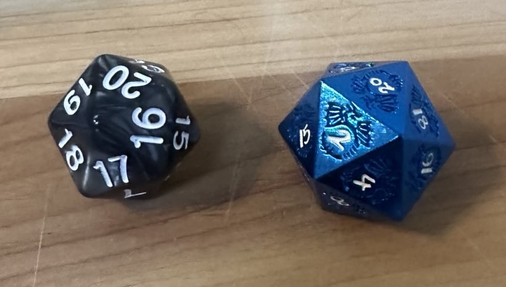
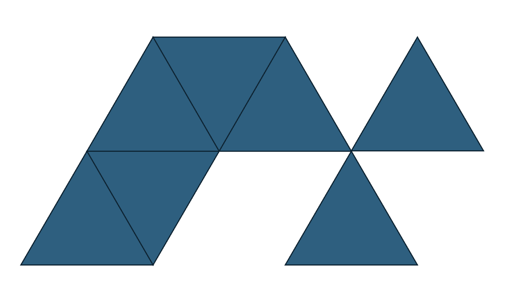
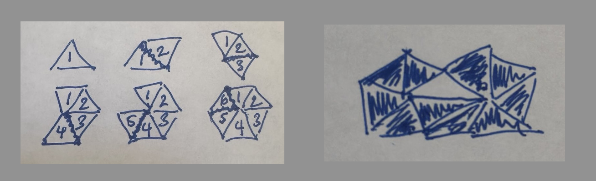
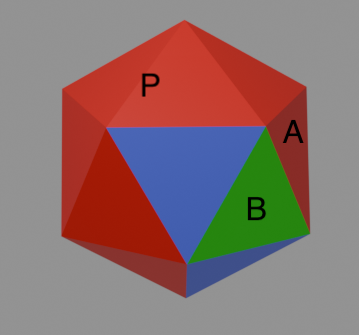
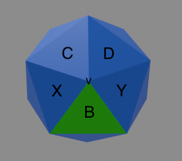
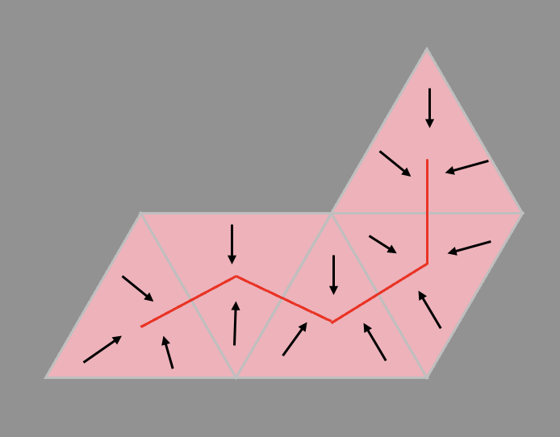
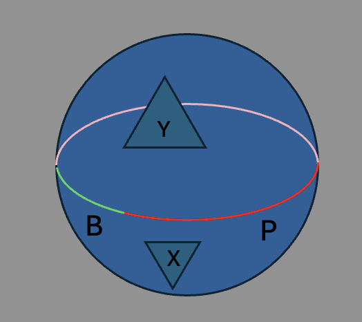
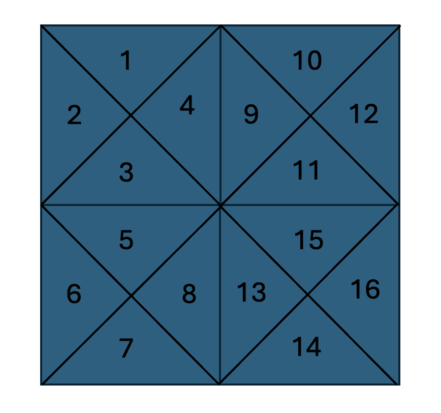
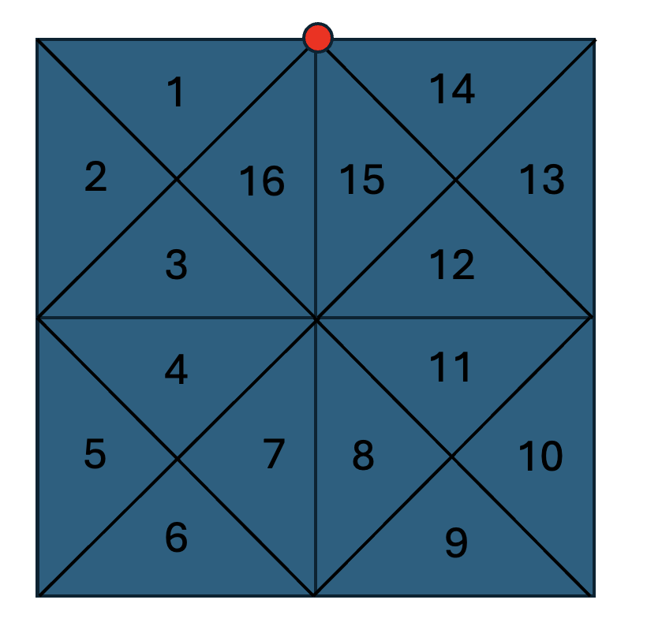

Spindown Dice
I've recently been dabbling in Magic: The Gathering.
It's
a hard game with a long history and a ton of cards. In Magic, players often use 20-sided dice, or d20s, to
decrement (or increment) counters that track numbers in the game such as life points.
An ordinary d20 doesn't have consecutive numbers adjacent to one another, which makes it inconvenient to use for
counting, so spindown d20s were invented. These dice do have consecutive numbers appearing next to one another,
so that players can easily decrement or increment counters using these dice.
This
blog post talks more about spindown d20s.

A spindown d20 (left) and a regular d20 (right).
Simplicial complexes and shellability
A d20 is geometrically an icosahedron, which is one of five
different Platonic solids. The first thing I think of, though, when I see an icosahedron
like a d20, is that it's a simplicial complex.
In two and three dimensions, simplicial complexes are essentially
shapes assembled from triangles (also called simplexes). Simplicial complexes
generalize to higher dimensions, but that's outside the scope of this post.

An example simplicial complex I made in PowerPoint.

An example I got from Wikipedia.
I've spent a lot of time studying simplicial complexes. And so to me, the spindown property of a d20 seems a whole lot like the shellability property of simplicial complexes, which informally states that a simplicial complex can be put together in a nice order. More specifically, imagine that we piece together the complex one triangle at a time. Then shellability requires that each time a new triangle is attached, the triangle must attach only along edges, not vertices. Topologists and combinatorialists care about shellable complexes since they are well-behaved and generally have other nice properties.

I've always been curious about why this property is called shellability, but I'd guess it's meant as an analogy with
shelling
an egg. The faces of a spindown die are naturally ordered by the numbers 1 through 20, so we could "shell"
the dice in this same order.
But is this actually a shelling order? The answer to this question is "yes", and it's easy to see if one has a
spindown d20 handy. Each
time one attaches a triangle with the next number, one can verify that it attaches only along edges. But there are
many other
hypothetical
spindown orders on d20s. We could number a d20 in many different ways that spins down from 20 to 1. Are all of these
also shelling
orders?
A shellable complex with a shelling order (left), and a complex that isn't shellable (right).
{kind=link}
One could be very patient and list all possible spindown orders of a d20 and check whether this is true. But there are many such spindown orders, and listing them all would be a challenge in itself. We're instead going to show by contradiction that all spindown orders are also shelling orders, by assuming that there's a spindown order on a d20 that isn't a shelling order.
Spindown orders are shelling orders (...on a d20)
So suppose we have a spindown order that isn't a shelling order. Then in the spindown order, at some point,
we must attach a triangle, calling it \(B\) that (1) attaches along a
vertex so that shellability is violated. But being part of a spindown order, it must (2) also be attached
to an edge of an existing
triangle (calling this triangle \(A\)). Let's refer to the sequence of triangles we have already attached via
spindown order as the path \(P\) that we've built so far, up to and including \(A\) (but not \(B\)).

An icosahedron is an regular polyhedron, which means that all faces are symmetric with one another. That means
it doesn't matter which adjacent pair of triangles \(A\) and \(B\) that we choose on the icosahedron to make our
argument; they're all the same. Let \(v\) be the vertex that \(B\) intersects with, and consider all neighboring
triangles (one of which is \(B\)).
An example path \(P\) (colored in red), and \(B\) in green.

Triangles \(X\) and \(Y\) could not already be in \(P\), otherwise \(B\) would not intersect \(P\) along a
vertex. This leaves three possibilities: either \(C\), or \(D\), or both, are part of \(P\). We'll start with the
case that \(C\) and \(D\) both belong to \(P\), and see that it's impossible to reach both X and Y while maintaining
the spindown order property.
The neighborhood of \(v\) contains all possible next triangles for \(P\).
The path \(P\) is itself a simplicial complex, and by our assumption that \(B\) is the first added triangle that violates shellability, \(P\) is shellable. As stated above, shellability gives us some nice properties, and in this case, it lets us prove that \(P\) is contractible. Contractibility roughly means we can deform it into a point, or into other contractible shapes like a simple curve. Below is an example of how we can deform a path of triangles into a piecewise linear curve.

Similarly, the single triangle \(B\) can also be deformed to a line. The intersection of \(B\) and \(P\) is a line
segment
and a point, which deforms to two points. And the whole icosahedron can be deformed into a sphere. Visualizing all
of this,
we're basically creating a loop on the surface of the d20 at exactly the moment that \(B\) is added to \(P\).
Deforming a path of triangles to a 1-dimensional curve.

This loop cuts
the sphere into two
hemispheres,
with \(X\) on one hemisphere and \(Y\) on the other. If we want to continue adding triangles to \(P\), we would
either
have to choose \(X\) or \(Y\), after which the other is unreachable. This means that \(P\) cannot be extended to a
spindown
order on the whole d20, which contradicts our initial assumption. Therefore all spindown orders must be shelling
orders. We started with the assumption that \(C\) and \(D\) were both part of \(P\), but the same topological
reasoning works if only one of them is part of \(P\).
Adding \(B\) to \(P\) creates a topological loop on the surface of the d20.
Spindown orders are not shelling orders (generally)
This begs the question: if we generalize the concept of "spindown order" to other simplicial complexes, are spindown
orders always shelling orders? The answer to this is "no", and a counterexample is a fairly simple
triangulation
of a square. Illustrated below are examples of a spindown order that isn't a shelling order, and also a shelling
order that is not a spindown order.

Shelling order that isn't a spindown order.

Spindown order that isn't a shelling order.
The difference between this complex, versus the d20, is that in the above spindown order, we're able to trace along the boundary of the square when we create a loop, so we aren't actually separating the remaining space into two disconnected regions by attaching along a vertex. We can't do this with a sphere since it has no boundary.
The argument above used reasoning specific to an icosahedron, though I think one can change this proof a bit to generalize to any triangulation of a sphere (an icosahedron is one of these). The argument above can also be made more rigorous by turning the handwaved "deformations" into actual homotopy equivalences.
Can we use a computer to solve this problem?
I think this is reasonably doable, and I might update this post on another day with some code.
SageMath is a computer algebra system
with a lot of useful mathematical features. It has simplicial
complexes implemented, and even a function that lets one instantiate the icosahedral
complex
directly. It also lets one compute the flip graph of a
simplicial complex. It has an extensive graph library, and includes a function that computes a Hamiltonian path for
a given graph.
A Hamiltonian path of a graph is one that traverses all vertices in a graph exactly once, and a flip graph is a graph that encodes edge-adjacencies of a the complex's faces. If you squint just a bit, you can see that a spindown order on a simplicial complex is "just" a Hamiltonian path on its flip graph. I would want to use SageMath to exhaustively (or, as exhaustively as we can) enumerate all Hamiltonian paths on the flip graph of the icosahedral complex (this is the dodecahedral graph; the icosahedron and dodecahron are dual), and for each path, verify that it's a shelling order. This would be one way of brute-forcing an answer to the question: we'd expect to find no counterexamples. At the very least, it would give one more confidence about the assertion that spindown orders on a d20 and shelling orders.
One thing I'm also curious about is whether the above proof can be formalized using a proof assistant such as Lean. The answer is probably "yes", but doing so is well beyond my current level of expertise with proof assistants.